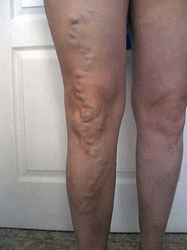
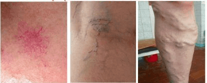
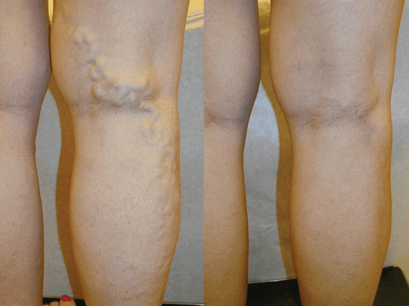

Mi historia es sobre cómo me libré de las venas varicosas por el bien de mis hijos y su futuro

Hola, queridos, me gustaría compartir con ustedes una pequeña experiencia de las venas varicosas, y cómo llegué directamente al hospital por su causa, pero también cómo me libré de él para siempre sin salir de mi propia casa
Si entendí algo de esto, es que las venas varicosas son un problema muy serio que puede conducir a enfermedades fatales con el tiempo. Siempre quise tener una familia numerosa, pero con el nacimiento de cada niño mis problemas con las venas varicosas fueron aún más graves
Tengo 5 hijos hermosos y saludables, y me gustaría vivir cerca de ellos durante mucho tiempo, pero después del nacimiento del quinto hijo mi condición empeoró mucho. Las venas comenzaron a aparecer tan claramente que pensé mi pierna explotará.
Una mañana estaba caminando en el parque con mis tres hijos, y tristemente noté cómo todas las madres jugaban con sus hijos, solo yo me senté en el banco como una mujer de 70 años, porque me dolían demasiado las piernas y me daba vergüenza lo hinchadas que estaban. Tan pronto como finalmente me dije que iba a superar el dolor e ir a jugar con mis queridos hijos durante varios minutos, sentí que me mareé, el dolor, como un rayo, me atravesó la pierna y me tumbé al suelo. Otras madres llamaron de inmediato ayuda, así que terminé en una cama de hospital en solo 10 minutos. El médico del hospital me dijo que sospechaba de cáncer y que las venas varicosas podrían provocar gangrena en las piernas
Tengo un problema hereditario con venas varicosas , este es un problema familiar por generaciones . Mi madre tenía venas varicosas, mi hermana, mi abuela, y parece que ahora yo también
Las venas comenzaron a sobresalir tan claramente que pensé que mi pierna explotaría
Ahora lamento no haber tomado este problema en serio, pensé que podría vivir con venas varicosas toda mi vida sin tratamiento. No sabía que con el tiempo las venas varicosas pueden provocar enfermedades graves, ataques cardíacos causados por trombosis, gangrena de toda la pierna e incluso algunas formas de cáncer. Experimenté un dolor terrible repetidamente, las venas varicosas no parecían estéticas y me disgustaba tocar las venas. Solo comencé a usar pantalones que me cubrían las piernas porque me daba vergüenza
Al regresar del hospital con unos pocos consejos quirúrgicos y sin tomar ningún medicamento específico, decidí tener este problema en cuenta y encontrar la cura por mí mismo
Probé todos los remedios naturales que pude encontrar, desde tinturas de trigo sarraceno hasta ungüentos naturales a base de brotes de pino o castaño salvaje. Nada ayudaba, era necesario resolver el problema de manera diferente. Pensé en la operación, pero después de varias consultas con 6 médicos diferentes, descubrí que después de la operación, el riesgo de desarrollar venas varicosas ocurre en el 99% de los casos. Comencé a tener síntomas de una mujer durante la menopausia, estoy cada vez más cansada, estaba preocupada, y ni siquiera podía ir a trabajar, porque mis piernas me dolían demasiado fuerte.

Después de muchas noches de insomnio y depresión constante, vi la luz al final del túnel
Nunca olvidaré aquel día, recuerdo cómo volví a casa y comencé a buscar en Internet desesperadamente un remedio que realmente funcionara. En el foro de un médico, me llamó la atención el dicho de que el tratamiento de las venas varicosas no tiene ningún efecto, ya que la medicina tradicional trata solo los síntomas y no la causa. Al mismo tiempo, recomienda una crema para el tratamiento de las venas varicosas llamado , que tiene un porcentaje muy alto de resultados positivos. Estaba buscando mucha información sobre cómo podía pedir la crema y dónde, y finalmente encontré esta tienda
¡OFERTA ESPECIAL!Uno de los médicos a los que consulté me dijo que sospechaba cáncer, que también descuidé mis venas varicosas
Pedí la crema aquí y comencé a usarla diariamente, En una semana pude ver el resultado, y en un mes el problema desaparecerá para siempre . Durante la segunda semana, las venas varicosas desaparecieron por completo
Esta crema es el rayo de sol en mi vida . Enumeraré algunas de las ventajas de esta crema: cura las heridas, fortalece las paredes de los vasos sanguíneos, alivia el dolor, reduce los trombos y la inflamación de los tejidos blandos
Para mí personalmente, ha cambiado mi vida por completo, y nuevamente puedo disfrutar de mi familia, puedo ser feliz con mis hijos. Lo hice por mi hijos. Han sido mi motivación todo este tiempo. Finalmente, voy a tener una vida normal, y puedo ver cómo mis hijos crecen y van a la escuela, y estoy feliz de que su madre esté sana
Espero que la información te ayude, ¡y en pocos días devolverás la belleza y la salud de tus piernas! ¡Te deseo buena suerte!